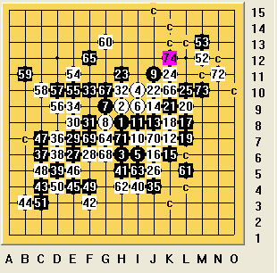
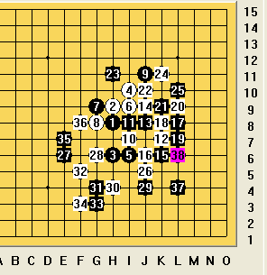

我和小刀师傅下的棋
#1 我和小刀师傅下的棋 作者：永不放弃 发表时间：2009-4-30 15:40:17
昨天师傅邀请我下了棋，我乐意的跟师傅下了棋。
我还是决定开瑞星局和师傅下。
=======上图对应的爱五子棋谱代码如下，以便你拆解：========
h8h9h6i10i6i9g9g8j11i7i8k7j8j9k6j6l8k8l7l9k9j10h11
======================================================
前23手都是常见的定式，我和师傅都没有考虑顺手下到23手。
=======上图对应的爱五子棋谱代码如下，以便你拆解：========
h8h9h6i10i6i9g9g8j11i7i8k7j8j9k6j6l8k8l7l9k9j10h11k11l10
======================================================
到了24手我考虑1分钟左右下到了K11这个点上，没想到师傅很快的下在了L10这个点上。出乎我意料之外，我以为这个24手不是常见，而师傅下的很准又快。
=======上图对应的爱五子棋谱代码如下，以便你拆解：========
h8h9h6i10i6i9g9g8j11i7i8k7j8j9k6j6l8k8l7l9k9j10h11k11l10j5e6f6e7e8f8h10f10
======================================================
在这里我26手防在16手下面，保持保守，师傅的27手挡了我的面三而且自己做大眠三，是很好的一步棋，也是常见的一手。28顺手防守，师傅的29手做棋，然后我当时是防在F8这个点上，31手E8里活3我挡上面，在这里没走几步败了（后面的变化我忘了怎么走了，在这里不发棋谱了），师傅说挡反了，而且30手不好，听里师傅的话后我悔棋到30手才下在了E8这个点上。可是感觉局部黑还是杀了，我对师傅苦着脸说，“还是不行。”师傅让我执黑，然后复盘。
=======上图对应的爱五子棋谱代码如下，以便你拆解：========
h8h9h6i10i6i9g9g8j11i7i8k7j8j9k6j6l8k8l7l9k9j10h11k11l10j5e6f6e7e8f8h10f10e9j4d7c6d6d5i4
======================================================
师傅的34挡在了E9，我也不甘示弱，35挡在26下面，控制外势。36手下在29手旁边，看似很普通的棋，却隐含着连续的四的连接，我在这里苦思几分钟后37盖住了36，30这个活2。38也盖住了我的眠3。39顺手防了一下，之后师傅长考。。。然后40手下在了35的左边。这个41手我当时看了下有很多反，如果忽略这个40手有如下结果。。。
=======上图对应的爱五子棋谱代码如下，以便你拆解：========
h8h9h6i10i6i9g9g8j11i7i8k7j8j9k6j6l8k8l7l9k9j10h11k11l10j5e6f6e7e8f8h10f10e9j4d7c6d6d5i4e4f3c4f7c5g6h5f4f5c7
======================================================
如图，这样就被抓了。。。
所以我当时长考之后下了这一手
=======上图对应的爱五子棋谱代码如下，以便你拆解：========
h8h9h6i10i6i9g9g8j11i7i8k7j8j9k6j6l8k8l7l9k9j10h11k11l10j5e6f6e7e8f8h10f10e9j4d7c6d6d5i4h5f3
======================================================
42手马上挡在了三三禁点上。我下这41手之后有点后悔，白棋局部控制住了黑棋。其实在这里黑还是有杀。。
=======上图对应的爱五子棋谱代码如下，以便你拆解：========
h8h9h6i10i6i9g9g8j11i7i8k7j8j9k6j6l8k8l7l9k9j10h11k11l10j5e6f6e7e8f8h10f10e9j4d7c6d6d5i4e4f3c4f7e5e3f5c5d4f4b7a8b4a4b3a2b5b6g6h7d3
======================================================
黑棋只要连续进攻就胜了。。
还是回到实战。。
=======上图对应的爱五子棋谱代码如下，以便你拆解：========
h8h9h6i10i6i9g9g8j11i7i8k7j8j9k6j6l8k8l7l9k9j10h11k11l10j5e6f6e7e8f8h10f10e9j4d7c6d6d5i4h5f3c4b3e4e5c7c5f4d4c3m
#2 Re:我和小刀师傅下的棋 作者：茗弈小刀 发表时间：2009-4-30 16:04:18
65手败了呀徒弟。
因为算这个杀所以超时间了。嘿，下边谈谈我的心得。
首先是这个25感觉是要点，所以占了。28手感觉稍微弱，是上一盘学棋下的。如果28这么下感觉稍微好些：
另外28在3下边2子位置也不错。
34手感觉不是很好，但当时想不出好点。
这盘棋黑一直在进攻吧，到50手我反了黑才丢了先手。45手不好，因为此时下边已经杀不出了，所以45应该在上边拓展.在55手后感觉黑乱了阵脚,65手大恶手，65可以先冲下边，实在不放心再控制一手。
从昨天和学棋下这几盘棋，感觉进步是神速的，特别是前边第一盘，控制力非常强，也很果断大气！不足之处是：比如第一盘，外势抓得非常好，但后边不会下了，在这样的情况下，子力分散了，那么就需要连接的棋去过渡，另外做棋的时候也要留意，注意自己的棋型。在后盘一定不要只看自己的棋，更重要的是知彼。还有一点就是不要轻言放弃，比如这盘，你开始下到32手就认输了吧，叫你悔不悔说下不出来，那么我就和你换着下，我不是杀出来了吗？当然这是因为你有的子下弱了。我的意思是不要轻言放弃！相信自己！
［ 逆刃 于 2009-4-30 20:45:53 时花20金币送鲜花一朵］
#3 Re:我和小刀师傅下的棋 作者：永不放弃 发表时间：2009-4-30 16:18:35
哦，对了，65手是败了，如图：
=======上图对应的爱五子棋谱代码如下，以便你拆解：========
h8h9h6i10i6i9g9g8j11i7i8k7j8j9k6j6l8k8l7l9k9j10h11k11l10j5e6f6e7e8f8h10f10e9j4d7c6d6d5i4h5f3c4b3e4e5c7c5f4d4c3m12m13e11e10d9d10c10b11g13l5h4i5g7f12k10g10j7h7n11m10n12n13k12l12k14
======================================================
这里就杀了，其实我下53手的时候已经是败了。这个时候师傅还没算出来
=======上图对应的爱五子棋谱代码如下，以便你拆解：========
h8h9h6i10i6i9g9g8j11i7i8k7j8j9k6j6l8k8l7l9k9j10h11k11l10j5e6f6e7e8f8h10f10e9j4d7c6d6d5i4h5f3c4b3e4e5c7c5f4d4c3m12m13k10g10n11m10n12n13k12l12k14
======================================================
 感觉都漏杀了很多，还有自己还需要提高计算力。
感觉都漏杀了很多，还有自己还需要提高计算力。
［ 茗弈小刀 于 2009-4-30 17:34:09 时花20金币送鲜花一朵］
#4 Re:我和小刀师傅下的棋 作者：茗弈小刀 发表时间：2009-4-30 16:30:20
57肯定防守下边，你怎么杀？#5 Re:我和小刀师傅下的棋 作者：永不放弃 发表时间：2009-4-30 16:50:24
哦，确实杀不了呢 ，师傅还是厉害呢，有V在。
，师傅还是厉害呢，有V在。
=======上图对应的爱五子棋谱代码如下，以便你拆解：========
h8h9h6i10i6i9g9g8j11i7i8k7j8j9k6j6l8k8l7l9k9j10h11k11l10j5e6f6e7e8f8h10f10e9j4d7c6d6d5i4h5f3c4b3e4e5c7c5f4d4c3m12m13n11j7k10g10l11n13m10o12m11o11e3f2k12h4h7h2h3l5m4l6l4i5g7k5i3g3e1m7n8n6o5m6o6k3l2k4
======================================================
有这么长的V，徒弟还是比不过师傅，好好跟师傅学习学习
［ 撒蓉儿 于 2009-4-30 20:47:01 时花20金币送鲜花一朵］
#6 Re:我和小刀师傅下的棋 作者：刀魂 发表时间：2009-4-30 21:09:36
呵呵，不知道我什么时候能和小刀同志 砍两把，我好想知道和她差距到底有多大。。。
#7 Re:我和小刀师傅下的棋 作者：刀学生 发表时间：2009-4-30 21:16:07
刀混这个害群之马 封杀
#8 Re:我和小刀师傅下的棋 作者：刀魂 发表时间：2009-4-30 21:17:03
，做人要厚道撒